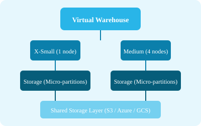

-- Create
CREATE WAREHOUSE my_wh
WITH WAREHOUSE_SIZE = 'XSMALL'
AUTO_SUSPEND = 300
AUTO_RESUME = TRUE
MIN_CLUSTER_COUNT = 1
MAX_CLUSTER_COUNT = 3
SCALING_POLICY = 'ECONOMY';
-- Resize
ALTER WAREHOUSE my_wh SET WAREHOUSE_SIZE = 'SMALL';
-- Suspend / Resume
ALTER WAREHOUSE my_wh SUSPEND;
ALTER WAREHOUSE my_wh RESUME;Available in Enterprise edition. Automatically adds clusters when queuing occurs, up to MAX_CLUSTER_COUNT.